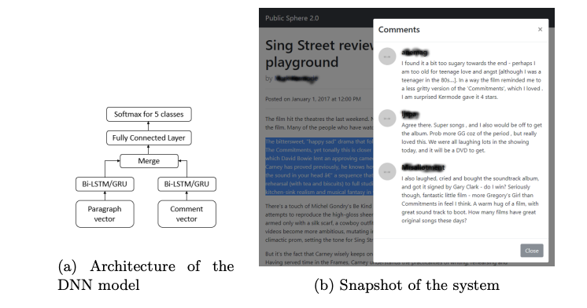

- ACL'24
Leveraging Machine-Generated Rationales to Facilitate Social Meaning Detection in Conversations.
Ritam Dutt, Zhen Wu, Kelly Shi, Divyanshu Sheth, Prakhar Gupta, Carolyn Penstein Rosé
More details
We present a generalizable classification approach that leverages Large Language Models (LLMs) to facilitate the detection of implicitly encoded social meaning in conversations. We design a multi-faceted prompt to extract a textual explanation of the reasoning that connects visible cues to underlying social meanings. These extracted explanations or rationales serve as augmentations to the conversational text to facilitate dialogue understanding and transfer. Our empirical results over 2,340 experimental settings demonstrate the significant positive impact of adding these rationales. Our findings hold true for in-domain classification, zero-shot, and few-shot domain transfer for two different social meaning detection tasks, each spanning two different corpora.
- EMNLP'23
Counting the Bugs in ChatGPT's Wugs: A Multilingual Investigation into the Morphological Capabilities of a Large Language Model.
Leonie Weissweiler, Valentin Hofmann, Anjali Kantharuban, Anna Cai, Ritam Dutt, Amey Hengle, Anubha Kabra, Atharva Kulkarni, Abhishek Vijayakumar, Haofei Yu, Hinrich Schuetze, Kemal Oflazer, David Mortensen
More details
Large language models (LLMs) have recently reached an impressive level of linguistic capability, prompting comparisons with human language skills. However, there have been relatively few systematic inquiries into the linguistic capabilities of the latest generation of LLMs, and those studies that do exist (i) ignore the remarkable ability of humans to generalize, (ii) focus only on English, and (iii) investigate syntax or semantics and overlook other capabilities that lie at the heart of human language, like morphology. Here, we close these gaps by conducting the first rigorous analysis of the morphological capabilities of ChatGPT in four typologically varied languages (specifically, English, German, Tamil, and Turkish). We apply a version of Berko's (1958) wug test to ChatGPT, using novel, uncontaminated datasets for the four examined languages. We find that ChatGPT massively underperforms purpose-built systems, particularly in English. Overall, our results—through the lens of morphology—cast a new light on the linguistic capabilities of ChatGPT, suggesting that claims of human-like language skills are premature and misleading.
- AACL'23
GrailQA++: A Challenging Zero-Shot Benchmark for Knowledge Base Question Answering.
Ritam Dutt, Sopan Khosla, Vinayshekhar Bannihatti Kumar, Rashmi Gangadharaiah
More details
Most benchmarks designed for question answering over knowledge bases (KBQA) operate with the i.i.d. assumption where one encounters the same schema items during inference as those observed during training. Recently, the GrailQA dataset was established
to evaluate zero-shot generalization capabilities of KBQA models as a departure from the
i.i.d. assumption. Reasonable performance
of current KBQA systems on the zero-shot
GrailQA split hints that the field might be moving towards more generalizable systems. In
this work, we observe a bias in the GrailQA
dataset towards simpler one or two-hop questions, which results in an inaccurate assessment
of the aforementioned prowess. We propose
GrailQA++, a challenging zero-shot KBQA
test set that contains more questions relying on
complex reasoning. We leverage the concept of
graph isomorphisms to control the complexity
of the questions and to ensure that our proposed test set has a fair distribution of simple
and complex questions. Existing KBQA models suffer a substantial drop in performance on
our constructed new test set as compared to
the GrailQA zero-shot split. Our analysis reveals how isomorphisms can be used to understand the complementary strengths of different
KBQA models and provide a deeper insight
into model mispredictions. Overall, our paper
highlights the non-generalizability of existing
models and the necessity for designing more
challenging benchmarks. Our dataset is available
here .
- ACL'23
Linguistic representations for fewer-shot relation extraction across domains.
Sireesh Gururaja, Ritam Dutt, Tinglong Liao, Carolyn Rosé
More details
Recent work has demonstrated the positive impact of incorporating linguistic representations as additional context and scaffolds on the in-domain performance of several NLP tasks. We extend this work by exploring the impact of linguistic representations on cross-domain performance in a few-shot transfer setting. An important question is whether linguistic representations enhance generalizability by providing features that function as cross-domain pivots. We focus on the task of relation extraction on three datasets of procedural text in two domains, cooking and materials science. Our approach augments a popular transformer-based architecture by alternately incorporating syntactic and semantic graphs constructed by freely available off-the-shelf tools. We examine their utility for enhancing generalization, and investigate whether earlier findings, e.g. that semantic representations can be more helpful than syntactic ones, extend to relation extraction in multiple domains. We find that while the inclusion of these graphs results in significantly higher performance in few-shot transfer, both types of graph exhibit roughly equivalent utility.
- Insights, EACL'23
Exploring the Reasons for Non-generalizability of KBQA systems.
Sopan Khosla*, Ritam Dutt*, Vinayshekhar Bannihatti Kumar, Rashmi Gangadharaiah
More details
Recent research has demonstrated impressive generalization capabilities of several Knowledge Base Question Answering (KBQA) models on the GrailQA dataset. We inspect whether these models can generalize to other datasets in a zero-shot setting. We notice a significant drop in performance and investigate the causes for the same. We observe that the models are dependent not only on the structural complexity of the questions, but also on the linguistic styles of framing a question. Specifically, the linguistic dimensions corresponding to explicitness, readability, coherence, and grammaticality have a significant impact on the performance of state-of-the-art KBQA models. Overall our results showcase the brittleness of such models and the need for creating generalizable systems.
- NAACL'22
PerKGQA: Question Answering over Personalized Knowledge Graphs.
Ritam Dutt, Kasturi Bhattacharjee, Rashmi Gangadharaiah, Dan Roth, Carolyn Rose
More details

Previous studies on question answering over knowledge graphs have typically operated over a single knowledge graph (KG). This KG is assumed to be known a priori and is lever- aged similarly for all users' queries during inference. However, such an assumption is not applicable to real-world settings, such as health- care, where one needs to handle queries of new users over unseen KGs during inference. Furthermore, privacy concerns and high computational costs render it infeasible to query the single KG that has information about all users while answering a specific user's query. The above concerns motivate our question answer- ing setting over personalized knowledge graphs (PERKGQA) where each user has restricted access to their KG. We observe that current state-of-the-art KGQA methods that require learning prior node representations fare poorly. We propose two complementary approaches, PATHCBR and PATHRGCN for PERKGQA. The former is a simple non-parametric technique that employs case-based reasoning, while the latter is a parametric approach using graph neural networks. Our proposed methods circumvent learning prior representations, can generalize to unseen KGs, and outperform strong baselines on an academic and an internal dataset by 6.5% and 10.5%.
- DialDoc, ACL'22
R3 : Refined Retriever-Reader pipeline for Multidoc2dial.
Srijan Bansal, Suraj Tripathi, Sumit Agarwal, Sireesh Gururaja, Aditya Srikanth Veerubhotla, Ritam Dutt, Teruko Mitamura, Eric Nyberg
More details
In this paper, we present our submission to the DialDoc shared task based on the MultiDoc2Dial dataset. MultiDoc2Dial is a conversational question answering dataset that grounds dialogues in multiple documents. The task involves grounding a user's query in a document followed by generating an appropriate response. We propose several improvements over the baseline's retriever-reader architecture to aid in modeling goal-oriented dialogues grounded in multiple documents. Our proposed approach employs sparse representations for passage retrieval, a passage re-ranker, the fusion-in-decoder architecture for generation, and a curriculum learning training paradigm. Our approach shows a 12 point improvement in BLEU score compared to the baseline RAG model.
- JBI'21
Improving broad-coverage medical entity linking with semantic type prediction and large-scale datasets .
Shikhar Vashishth , Denis Newman-Griffis, Rishabh Joshi, Ritam Dutt, Carolyn P. Rose
More details
Medical entity linking is the task of identifying and standardizing medical concepts referred to in an unstructured text. Most of the existing methods adopt a three-step approach of (1) detecting mentions, (2) generating a list of candidate concepts, and finally (3) picking the best concept among them. In this paper, we probe into alleviating the problem of overgeneration of candidate concepts in the candidate generation module, the most under-studied component of medical entity linking. For this, we present MedType, a fully modular system that prunes out irrelevant candidate concepts based on the predicted semantic type of an entity mention. We incorporate MedType into five off-the-shelf toolkits for medical entity linking and demonstrate that it consistently improves entity linking performance across several benchmark datasets. To address the dearth of annotated training data for medical entity linking, we present WikiMed and PubMedDS, two large-scale medical entity linking datasets, and demonstrate that pre-training MedType on these datasets further improves entity linking performance. We make our source code and datasets publicly available for medical entity linking research.
- HT'21
You too brutus! trapping hateful users in social media: Challenges, solutions & insights .
Mithun Das, Punyajoy Saha, Ritam Dutt, Pawan Goyal, Animesh Mukherjee, Binny Mathew
More details
Hate speech is regarded as one of the crucial issues plaguing the online social media. The current literature on hate speech detection leverages primarily the textual content to find hateful posts and subsequently identify hateful users. However, this methodology disregards the social connections between users. In this paper, we run a detailed exploration of the problem space and investigate an array of models ranging from purely textual to graph based to finally semi-supervised techniques using Graph Neural Networks (GNN) that utilize both textual and graph-based features. We run exhaustive experiments on two datasets -- Gab, which is loosely moderated and Twitter, which is strictly moderated. Overall the AGNN model achieves 0.791 macro F1-score on the Gab dataset and 0.780 macro F1-score on the Twitter dataset using only 5% of the labeled instances, considerably outperforming all the other models.
- DialDoc, ACL'21
Team JARS: DialDoc Subtask 1 - Improved Knowledge Identification with Supervised Out-of-Domain Pretraining.
Sopan Khosla, Justin Lovelace, Ritam Dutt, Adithya Pratapa
More details
In this paper, we discuss our submission for DialDoc subtask 1. The subtask requires systems to extract knowledge from FAQ-type documents vital to reply to a user's query in a conversational setting. We experiment with pretraining a BERT-based question-answering model on different QA datasets from MRQA, as well as conversational QA datasets like CoQA and QuAC. Our results show that models pretrained on CoQA and QuAC perform better than their counterparts that are pretrained on MRQA datasets. Our results also indicate that adding more pretraining data does not necessarily result in improved performance. Our final model, which is an ensemble of AlBERT-XL pretrained on CoQA and QuAC independently, with the chosen answer having the highest average probability score, achieves an F1-Score of 70.9% on the official test-set.
- SIGIR'21
When fair ranking meets uncertain inference .
Avijit Ghosh, Ritam Dutt, Christo Wilson
More details
Existing fair ranking systems, especially those designed to be demographically fair, assume that accurate demographic information about individuals is available to the ranking algorithm. In practice, however, this assumption may not hold — in real-world contexts like ranking job applicants or credit seekers, social and legal barriers may prevent algorithm operators from collecting peoples' demographic information. In these cases, algorithm
operators may attempt to infer peoples' demographics and then supply these inferences as inputs to the ranking algorithm.
In this study, we investigate how uncertainty and errors in demographic inference impact the fairness offered by fair ranking algorithms. Using simulations and three case studies with real datasets, we show how demographic inferences drawn from real systems can lead to unfair rankings. Our results suggest that
developers should not use inferred demographic data as input to fair ranking algorithms, unless the inferences are extremely accurate.
- SITE'21
Investigating adoption and collaboration with digital clinical simulations by teacher educators .
Ritam Dutt, Garron Hillaire, Alison Fang, Laura Larke, Carolyn Rosé, Justin Reich
More details
In this study, we examine the outcome of a four-day workshop with 24 Teacher Educators (fellows) who were supported in using two tools - Teacher Moments (TM) and Eliciting Learner Knowledge (ELK). The tools are designed for authoring, implementing, and research Digital Clinical Simulations in education. The simulations centered around issues of equity in K-12 computer science education to provide in-/pre-service teachers with opportunities to practice high-stakes interactions in low-stakes settings. We operationalize the technology adoption of the fellows through the notions of self-efficacy, help-seeking, and technology concerns to recognize the potential barriers they faced in transitioning from authoring to implementing and research design. Finally, we note the fellows' implementation plans in the ensuing academic year and examine potential collaborations amongst them using social network analysis. Our results reveal how a small group of fellows, spanning major regions of the U.S., generate a broad range of scenarios, as well as clusters of scenarios, enabling simulation-based research supported by collaboration.
- EACL'21
ResPer: Computationally Modelling Resisting Strategies in Persuasive Conversations .
Ritam Dutt*, Sayan Sinha*, Rishabh Joshi, Surya Shekhar Chakraborty, Meredith Riggs, Xinru Yan, Haogang Bao, Carolyn Rose
More details
Modelling persuasion strategies as predictors of task outcome has several real-world applications and has received considerable attention from the computational linguistics community. However, previous research has failed to account for the resisting strategies employed by an individual to foil such persuasion attempts. Grounded in prior literature in cognitive and social psychology, we propose a generalised framework for identifying resisting strategies in persuasive conversations. We instantiate our framework on two distinct datasets comprising persuasion and negotiation conversations. We also leverage a hierarchical sequence-labelling neural architecture to infer the aforementioned resisting strategies automatically. Our experiments reveal the asymmetry of power roles in non-collaborative goal-directed conversations and the benefits accrued from incorporating resisting strategies on the final conversation outcome. We also investigate the role of different resisting strategies on the conversation outcome and glean insights that corroborate with past findings. We also make the code and the dataset of this work publicly available at
here.
- CLEF'21
A pipelined approach to Anaphora Resolution in Chemical Patents .
Ritam Dutt*, Sopan Khosla*, Carolyn Rose
More details
We present our pipelined approach for the sub-task of anaphora resolution in chemical patents as part of the ChEMU shared task at CLEF, 2021. Our approach consists of independently trained mention extraction and relation classification modules. For the former, we set up a BERT-CRF and leverage the BIO scheme to represent the mentions. We include a post-processing step after mention extraction to correct boundary errors and handle nested mentions. For relation classification, we develop a BERT-based model that captures the context between the two candidate mentions to predict the relation between the two. Our final submission ensembles BERT models pretrained on different types of clinical data and achieves a Strict F1 of 0.785 on the official test set.
- Semeval, COLING'20
LTIatCMU at SemEval-2020 Task 11: Incorporating Multi-Level Features for Multi-Granular Propaganda Span Identification .
Sopan Khosla*, Rishabh Joshi*, Ritam Dutt*, Alan W Black, Yulia Tsvetkov
More details
In this paper we describe our submission for the task of Propaganda Span Identification in news articles. We introduce a BERT-BiLSTM based span-level propaganda classification model that identifies which token spans within the sentence are indicative of propaganda. The ”multi-granular” model incorporates linguistic knowledge at various levels of text granularity, including word, sentence and document level syntactic, semantic and pragmatic affect features, which significantly improve model performance, compared to its language-agnostic variant. To facilitate better representation learning, we also collect a corpus of 10k news articles, and use it for fine-tuning the model. The final model is a majority-voting ensemble which learns different propaganda class boundaries by leveraging different subsets of incorporated knowledge.
- EMNLP'20
Keeping Up Appearances: Computational Modeling of Face Acts in Persuasion Oriented Discussions .
Ritam Dutt, Rishabh Joshi, Carolyn Rose.
More details
The notion of face refers to the public self-image of an individual that emerges both from the individual's own actions as well as from the interaction with others. Modeling face and understanding its state changes throughout a conversation is critical to the study of maintenance of basic human needs in and through interaction. Grounded in the politeness theory of Brown and Levinson (1978), we propose a generalized framework for modeling face acts in persuasion conversations, resulting in a reliable coding manual, an annotated corpus, and computational models. The framework reveals insights about differences in face act utilization between asymmetric roles in persuasion conversations. Using computational models, we are able to successfully identify face acts as well as predict a key conversational outcome (e.g. donation success). Finally, we model a latent representation of the conversational state to analyze the impact of predicted face acts on the probability of a positive conversational outcome and observe several correlations that corroborate previous findings.
- SocialNLP, ACL'20
NARMADA: Need and Available Resource Managing Assistant for Disasters and Adversities.
Kaustubh Hiware*, Ritam Dutt*, Sayan Sinha, Sohan Patro, Kripa Ghosh, Saptarshi Ghosh
More details
Although a lot of research has been done on utilising Online Social Media during disasters, there exists no system for a specific task that is critical in a post-disaster scenario – identifying resource-needs and resource-availabilities in the disaster-affected region, coupled with their subsequent matching. To this end, we present NARMADA, a semi-automated platform which leverages the crowd-sourced information from social media posts for assisting post-disaster relief coordination efforts. The system employs Natural Language Processing and Information Retrieval techniques for identifying resource-needs and resource-availabilities from microblogs, extracting resources from the posts, and also matching the needs to suitable availabilities. The system is thus capable of facilitating the judicious management of resources during post-disaster relief operations.
- AAAI'20
Analysing the extent of misinformation in cancer related tweets .
Rakesh Bal*, Sayan Sinha*, Swastika Dutta, Rishabh Joshi, Sayan Ghosh, Ritam Dutt
More details
Twitter has become one of the most sought after places to discuss a wide variety of topics, including medically relevant issues such as cancer. This helps spread awareness regarding the various causes, cures and prevention methods of cancer. However, no proper analysis has been performed, which discusses the validity of such claims. In this work, we aim to tackle the misinformation spread in such platforms. We collect and present a dataset regarding tweets which talk specifically about cancer and propose an attention-based deep learning model for automated detection of misinformation along with its spread. We then do a comparative analysis of the linguistic variation in the text corresponding to misinformation and truth. This analysis helps us gather relevant insights on various social aspects related to misinformed tweets.
- Socinfo'19
"Deep Dive into Anonymity: A Large Scale Analysis of Quora Questions".
Binny Mathew*, Ritam Dutt*, Suman Kalyan Maity, Pawan Goyal, Animesh Mukherjee
More details
Anonymity forms an integral and important part of our digital life. It enables us to express our true selves without the fear
of judgment. In this paper, we investigate the different aspects of anonymity in the social Q&A site Quora. The choice
of Quora is motivated by the fact that this is one of the rare
social Q&A sites that allow users to explicitly post anonymous questions and such activity in this forum has become normative rather than a taboo. Through an analysis of 5.1
million questions, we observe that at a global scale almost
no difference manifests between the linguistic structure of the
anonymous and the non-anonymous questions. We find that
topical mixing at the global scale to be the primary reason for
the absence. However, the differences start to feature once we
“deep dive” and (topically) cluster the questions and compare
the clusters that have high volumes of anonymous questions
with those that have low volumes of anonymous questions.
In particular, we observe that the choice to post the question as anonymous is dependent on the user's perception of
anonymity and they often choose to speak about depression,
anxiety, social ties and personal issues under the guise of
anonymity. We further perform personality trait analysis and
observe that the anonymous group of users has positive correlation with extraversion, agreeableness, and negative correlation with openness. Subsequently, to gain further insights, we build an anonymity grid to identify the differences in the perception on anonymity of the user posting the question and the
community of users answering it. We also look into the first
response time of the questions and observe that it is lowest for
topics which talk about personal and sensitive issues, which
hints toward a higher degree of community support and user
engagement.
- IPM'19
Utilizing microblogs for assisting post-disaster relief operations via matching resource needs and availabilities .
Ritam Dutt, Moumita Basu, Kripabandhu Ghosh, Saptarshi Ghosh
More details


During a disaster event, two types of information that are especially useful for coordinating relief operations are needs and availabilities of resources (e.g., food, water, medicines) in the affected region. Information posted on microblogging sites is increasingly being used for assisting post-disaster relief operations. In this context, two practical challenges are (i) to identify tweets that inform about resource needs and availabilities (termed as need-tweets and availability-tweets, respectively), and (ii) to automatically match needs with appropriate availabilities. While several works have addressed the first problem, there has been little work on automatically matching needs with availabilities. The few prior works that attempted matching only considered the resources, and no attempt has been made to understand other aspects of needs/availabilities that are essential for matching in practice. In this work, we develop a methodology for understanding five important aspects of need-tweets and availability-tweets, including what resource and what quantity is needed/available, the geographical location of the need/availability, and who needs / is providing the resource. Understanding these aspects helps us to address the need-availability matching problem considering not only the resources, but also other factors such as the geographical proximity between the need and the availability. To the best of our knowledge, this study is the first attempt to develop methods for understanding the semantics of need-tweets and availability-tweets. We also develop a novel methodology for matching need-tweets with availability-tweets, considering both resource similarity and geographical proximity. Experiments on two datasets corresponding to two disaster events, demonstrate that our proposed methods perform substantially better matching than those in prior works. Additionally, our proposed methodologies are reusable across different types of disaster events.
- WebSci'19
Spread of Hate Speech in Online Social Media .
Ritam Dutt, Moumita Basu, Kripabandhu Ghosh, Saptarshi Ghosh
More details
Hate speech is considered to be one of the major issues currently plaguing the online social media. With online hate speech culminating in gruesome scenarios like the Rohingya genocide in Myanmar, anti-Muslim mob violence in Sri Lanka, and the Pittsburgh synagogue shooting, there is a dire need to understand the dynamics of user interaction that facilitate the spread of such hateful content. In this paper, we perform the first study that looks into the diffusion dynamics of the posts made by hateful and non-hateful users on Gab (Gab.com). We collect a massive dataset of 341K users with 21M posts and investigate the diffusion of the posts generated by hateful and non-hateful users. We observe that the content generated by the hateful users tend to spread faster, farther and reach a much wider audience as compared to the content generated by normal users. We further analyze the hateful and non-hateful users on the basis of their account and network characteristics. An important finding is that the hateful users are far more densely connected among themselves. Overall, our study provides the first cross-sectional view of how hateful users diffuse hate content in online social media.
- ECIR'19
Public Sphere 2.0: Targeted Commenting in Online News Media .
Ankan Mullick, Sayan Ghosh*, Ritam Dutt*, Avijit Ghosh*, Abhijnan Chakraborty
More details

With the increase in online news consumption, to maximize advertisement revenue, news media websites try to attract and retain their readers on their sites. One of the most effective tools for reader engagement is commenting, where news readers post their views as comments against the news articles. Traditionally, it has been assumed that the comments are mostly made against the full article. In this work, we show that present commenting landscape is far from this assumption. Because the readers lack the time to go over an entire article, most of the comments are relevant to only particular sections of an article. In this paper, we build a system which can automatically classify comments against relevant sections of an article. To implement that, we develop a deep neural network based mechanism to find comments relevant to any section and a paragraph wise commenting interface to showcase them. We believe that such a data driven commenting system can help news websites to further increase reader engagement.
- SMERP, WWW'18
"SAVITR:A System for Real-time Location Extraction from Microblogs during Emergencies".
Ritam Dutt, Kaustubh Hiware, Avijit Ghosh, Rameshwar Bhaskaran. More details
We present SAVITR, an automated system that leverages the information posted on the Twitter microblogging site to monitor and analyse emergency situations. Given that only a very small percentage of microblogs are geo-tagged, it is essential for such a system to extract locations from the text of the microblogs. We employ natural language processing techniques to infer the locations mentioned in the microblog text, in an unsupervised fashion and display it on a map-based interface. The system is designed for efficient performance, achieving an F-score of 0.81, and is approximately two orders of magnitude faster than other available tools for location extraction.
You can catch a glimpse of the work online here.
here.
- NAACL'18 "CL Scholar: The ACL Anthology Knowledge Graph Miner." Mayank Singh, Pradeep Dogga, Sohan Patro, Dhiraj Barnwal, Ritam Dutt, Rajarshi Haldar, Pawan Goyal and Animesh MukherjeeMore details
We present CL Scholar, the ACL Anthology
knowledge graph miner to facilitate highquality
search and exploration of current research
progress in the computational linguistics
community. In contrast to previous works,
periodically crawling, indexing and processing
of new incoming articles is completely automated
in the current system. CL Scholar utilizes both textual and network information
for knowledge graph construction. As an
additional novel initiative, CL Scholar supports
more than 1200 scholarly natural language
queries along with standard keywordbased
search on constructed knowledge graph.
It answers binary, statistical and list based
natural language queries. The current system
is deployed online and we also provide REST
API support along with bulk download facility.
You can catch a glimpse of the work online
here. The code and data are available
here.
- ICIIT'18 "Senator, We Sell Ads:" Analysis of the 2016 Russian Facebook Ads Campaign. Ritam Dutt, Ashok Deb, and Emilio Ferrara. More details
One of the key aspects of the United States democracy is free
and fair elections that allow for a peaceful transfer of power from one
President to the next. The 2016 US presidential election stands out due
to suspected foreign influence before, during, and after the election. A
significant portion of that suspected influence was carried out via social
media. In this paper, we look specifically at 3,500 Facebook ads allegedly
purchased by the Russian government. These ads were released on May
10, 2018 by the US Congress House Intelligence Committee. We analyzed
the ads using natural language processing techniques to determine textual
and semantic features associated with the most effective ones. We
clustered the ads over time into the various campaigns and the labeled
parties associated with them. We also studied the effectiveness of Ads
on an individual, campaign and party basis. The most effective ads tend
to have less positive sentiment, focus on past events and are more specific and personalized in nature. The more effective campaigns also show such similar characteristics. The campaigns’ duration and promotion of the Ads suggest a desire to sow division rather than sway the election.